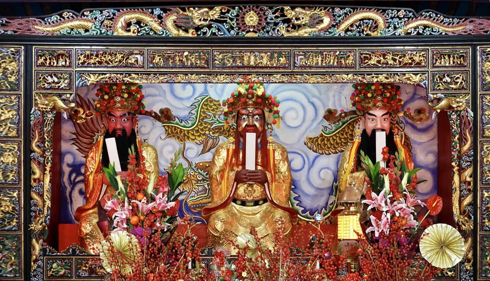

三山国王灵签
三山国王为来自中国粤东地区之山神信仰，三山是指揭西县河婆镇北面的三座山—巾山、明山、独山，发源于揭阳揭西，是中华神话谱系中古老而独特的地方守护神，其护国庇民、国泰民安的精神被历代民众所尊崇。灵签旨在为迷茫者指点迷津。请静下心来，默念您的问题，然后开始求签。
三山国王为来自中国粤东地区之山神信仰，三山是指揭西县河婆镇北面的三座山—巾山、明山、独山，发源于揭阳揭西，是中华神话谱系中古老而独特的地方守护神，其护国庇民、国泰民安的精神被历代民众所尊崇。灵签旨在为迷茫者指点迷津。请静下心来，默念您的问题，然后开始求签。